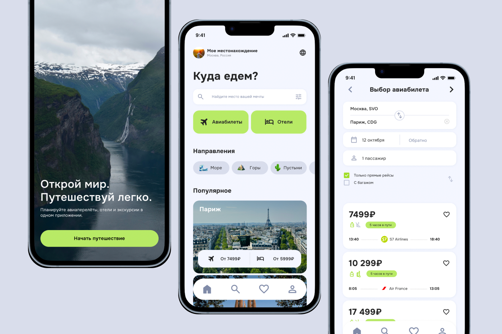
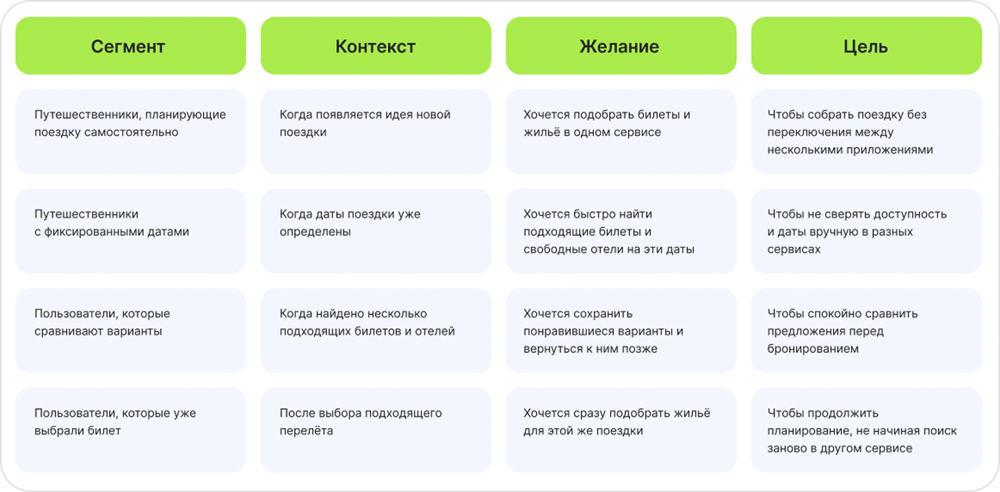
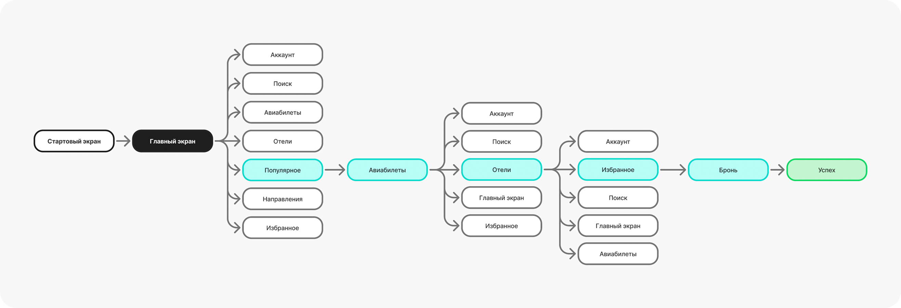
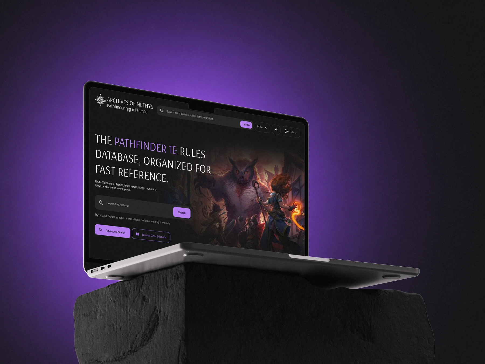

8 из 12
- опрошенных хотели бы искать билеты и отели в одном сервисе.
Smart Travel – мобильное приложение для планирования путешествий: авиабилеты и отели в одном месте. Пользователь может найти рейс, подобрать отель и оформить оба бронирования за одну сессию, не переключаясь между сервисами.

Планирование поездки требует минимум двух приложений: одно для авиабилетов, другое для отелей. Пользователь вручную сверяет даты, цены и наличие мест, и рискует, что к моменту оплаты что-то изменится. В ходе desk research я нашла подтверждение этой боли в реальных обсуждениях: люди ищут единое решение, но не находят его.
Я провела интервью с людьми, которые самостоятельно планируют путешествия, чтобы понять, как они ищут билеты и жильё, какими сервисами пользуются и что вызывает сложности в процессе.
В ответах повторялись похожие потребности — на их основе я выделила основные задачи, которые пользователи хотят решить при планировании поездки.
Когда я планирую самостоятельное путешествие, я хочу подобрать билеты и жильё в одном месте, чтобы не переключаться между сервисами и собрать поездку быстрее.

После того как я определила основные задачи пользователей, я посмотрела, как их решают существующие сервисы для путешествий и какие подходы можно улучшить.
Исследование помогло определить логику продукта: объединить поиск билетов и жилья в один последовательный сценарий и сократить количество лишних переходов между этапами планирования.
На основе выделенных инсайтов я построила основной сценарий: пользователь последовательно выбирает перелёт и жильё, сохраняет подходящие варианты и собирает их в одну поездку перед бронированием.

На основе исследования и пользовательского сценария я разработала интерфейс SmartTravel, который объединяет поиск билетов и жилья в одном сервисе. Основной фокус — сократить количество переключений и сделать путь от поиска до бронирования последовательным и понятным.
SmartTravel объединяет поиск билетов и жилья в один последовательный сценарий — от выбора подходящих вариантов до бронирования поездки. Если бы проект развивался дальше как реальный продукт, после запуска я бы проверила, действительно ли такой сценарий сокращает путь пользователя и помогает доводить планирование до бронирования.

Редизайн базы знаний для настольной RPG
2026